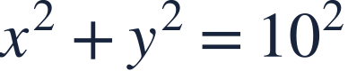
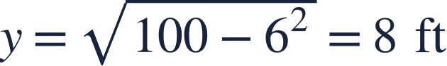
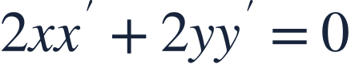
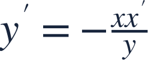
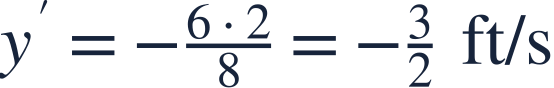
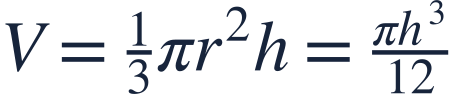
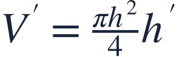
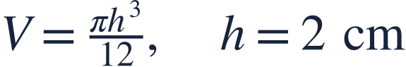

Cones and ladders
원뿔과 사다리

Geometry supplies the relationship before calculus supplies the rate.
기하 관계식을 먼저 만들고 미분으로 변화율을 구합니다.

Geometry supplies the relationship before calculus supplies the rate.
기하 관계식을 먼저 만들고 미분으로 변화율을 구합니다.

A 10-foot ladder slides along a level floor and vertical wall. x,y>0 are its horizontal and vertical distances.
길이 10피트 사다리가 바닥과 벽을 따라 움직입니다. x,y>0은 가로와 세로 거리입니다.

A fixed ladder length links both moving distances. Cone geometry similarly links radius and depth.
사다리의 고정 길이가 두 거리를 연결합니다. 원뿔에서는 닮음이 반지름과 깊이를 연결합니다.

Differentiate the relationship with respect to time.
관계식을 시간에 대해 미분하고 세로 변화율을 정리합니다.

The top moves downward at 1.5 feet per second.
사다리 위쪽은 초당 1.5피트씩 내려갑니다.

For a cone with height 8 and radius 4, eliminate r before differentiating.
높이 8, 반지름 4인 원뿔에서는 미분 전에 r을 h로 바꿉니다.

Use the current water radius, not the full cone radius, in the volume formula.
부피식에는 원뿔 전체 반지름이 아니라 현재 수면의 반지름을 쓰세요.

Find h′ for the cone model.
원뿔 모형에서 h′를 구하세요.